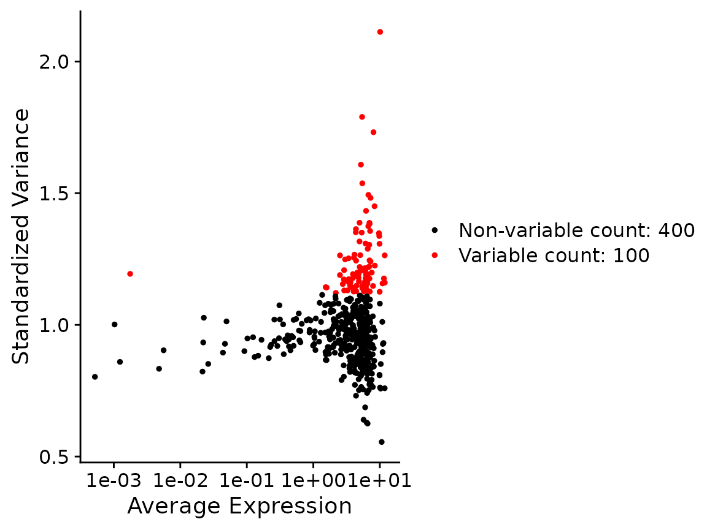
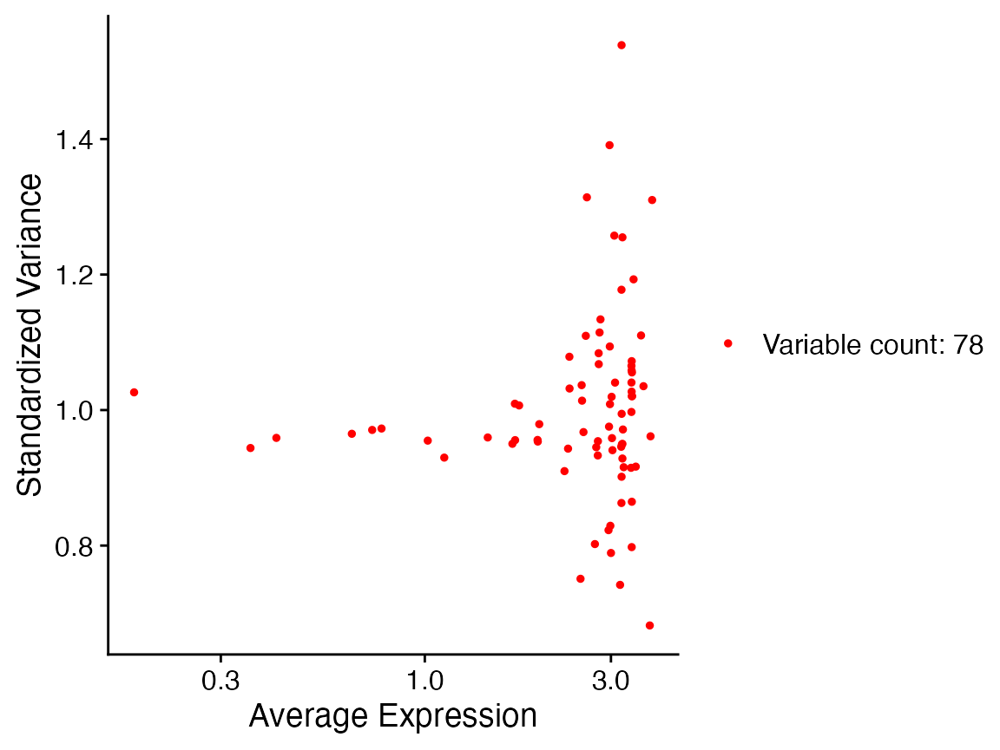

seurat.Rmd
library(Canek)
#> Registered S3 method overwritten by 'spdep':
#> method from
#> plot.mst ape
library(Seurat)
x <- lapply(names(SimBatches$batches), function(batch) {
CreateSeuratObject(SimBatches$batches[[batch]], project = batch)
})
x <- merge(x[[1]], x[[2]])
x[["cell_type"]] <- SimBatches$cell_types
x
#> An object of class Seurat
#> 500 features across 1579 samples within 1 assay
#> Active assay: RNA (500 features, 0 variable features)
table(x$orig.ident)
#>
#> B1 B2
#> 631 948
x <- NormalizeData(x)
x <- FindVariableFeatures(x, selection.method = "mean.var.plot")
VariableFeaturePlot(x)
x <- ScaleData(x)
#> Centering and scaling data matrix
x <- RunPCA(x)
#> Warning in irlba(A = t(x = object), nv = npcs, ...): You're computing too large
#> a percentage of total singular values, use a standard svd instead.
#> PC_ 1
#> Positive: Gene65, Gene410, Gene373, Gene449, Gene323, Gene473, Gene61, Gene250, Gene50, Gene89
#> Gene378, Gene342, Gene469, Gene24, Gene207, Gene213, Gene54, Gene471, Gene224, Gene64
#> Gene4, Gene348, Gene432, Gene375, Gene94, Gene422, Gene439, Gene396, Gene78, Gene487
#> Negative: Gene461, Gene341, Gene492, Gene183, Gene136, Gene31, Gene366, Gene311, Gene5, Gene140
#> Gene460, Gene438, Gene162, Gene187, Gene211, Gene370, Gene401, Gene172, Gene147, Gene474
#> Gene326, Gene223, Gene74, Gene354, Gene220, Gene361, Gene304, Gene77, Gene322, Gene359
#> PC_ 2
#> Positive: Gene322, Gene31, Gene223, Gene211, Gene64, Gene373, Gene341, Gene410, Gene449, Gene323
#> Gene224, Gene220, Gene327, Gene361, Gene461, Gene207, Gene61, Gene89, Gene209, Gene183
#> Gene375, Gene487, Gene75, Gene354, Gene378, Gene451, Gene348, Gene471, Gene77, Gene460
#> Negative: Gene4, Gene366, Gene74, Gene213, Gene136, Gene65, Gene473, Gene94, Gene492, Gene5
#> Gene78, Gene14, Gene311, Gene326, Gene432, Gene422, Gene438, Gene401, Gene497, Gene328
#> Gene474, Gene250, Gene381, Gene147, Gene141, Gene342, Gene54, Gene172, Gene239, Gene162
#> PC_ 3
#> Positive: Gene311, Gene239, Gene471, Gene322, Gene492, Gene410, Gene323, Gene65, Gene378, Gene354
#> Gene5, Gene469, Gene250, Gene183, Gene136, Gene207, Gene438, Gene348, Gene461, Gene453
#> Gene439, Gene366, Gene64, Gene31, Gene140, Gene75, Gene22, Gene432, Gene141, Gene24
#> Negative: Gene327, Gene94, Gene224, Gene223, Gene77, Gene449, Gene74, Gene341, Gene220, Gene162
#> Gene473, Gene209, Gene326, Gene304, Gene261, Gene89, Gene474, Gene342, Gene187, Gene460
#> Gene50, Gene18, Gene4, Gene396, Gene61, Gene213, Gene147, Gene361, Gene422, Gene381
#> PC_ 4
#> Positive: Gene61, Gene449, Gene261, Gene239, Gene461, Gene162, Gene209, Gene141, Gene342, Gene195
#> Gene5, Gene439, Gene31, Gene250, Gene24, Gene136, Gene54, Gene94, Gene64, Gene298
#> Gene22, Gene323, Gene14, Gene147, Gene366, Gene381, Gene211, Gene474, Gene140, Gene359
#> Negative: Gene183, Gene401, Gene224, Gene471, Gene327, Gene361, Gene311, Gene50, Gene373, Gene65
#> Gene378, Gene422, Gene4, Gene322, Gene223, Gene74, Gene487, Gene207, Gene220, Gene213
#> Gene497, Gene375, Gene18, Gene78, Gene453, Gene243, Gene410, Gene304, Gene473, Gene492
#> PC_ 5
#> Positive: Gene422, Gene195, Gene89, Gene209, Gene250, Gene432, Gene22, Gene342, Gene147, Gene396
#> Gene359, Gene140, Gene78, Gene453, Gene220, Gene243, Gene14, Gene474, Gene326, Gene50
#> Gene322, Gene439, Gene77, Gene425, Gene298, Gene183, Gene24, Gene438, Gene162, Gene361
#> Negative: Gene94, Gene207, Gene449, Gene461, Gene75, Gene4, Gene410, Gene304, Gene261, Gene65
#> Gene354, Gene327, Gene366, Gene136, Gene54, Gene492, Gene473, Gene74, Gene18, Gene31
#> Gene341, Gene323, Gene348, Gene239, Gene223, Gene311, Gene213, Gene172, Gene224, Gene61We pass the column containing the batch information.
x <- RunCanek(x, "orig.ident")
#> Warning in (function (A, nv = 5, nu = nv, maxit = 1000, work = nv + 7, reorth =
#> TRUE, : You're computing too large a percentage of total singular values, use a
#> standard svd instead.
x <- ScaleData(x)
#> Centering and scaling data matrix
x <- FindVariableFeatures(x, nfeatures = 500)
VariableFeaturePlot(x)
x <- RunPCA(x)
#> Warning in irlba(A = t(x = object), nv = npcs, ...): You're computing too large
#> a percentage of total singular values, use a standard svd instead.
#> PC_ 1
#> Positive: Gene31, Gene461, Gene322, Gene341, Gene211, Gene223, Gene64, Gene183, Gene361, Gene311
#> Gene354, Gene140, Gene220, Gene207, Gene239, Gene410, Gene492, Gene323, Gene370, Gene451
#> Gene460, Gene187, Gene471, Gene438, Gene75, Gene487, Gene209, Gene453, Gene195, Gene298
#> Negative: Gene65, Gene4, Gene473, Gene74, Gene213, Gene94, Gene366, Gene50, Gene78, Gene342
#> Gene250, Gene422, Gene14, Gene432, Gene327, Gene89, Gene54, Gene326, Gene497, Gene449
#> Gene136, Gene396, Gene224, Gene328, Gene381, Gene474, Gene373, Gene141, Gene469, Gene261
#> PC_ 2
#> Positive: Gene327, Gene373, Gene449, Gene224, Gene223, Gene89, Gene61, Gene220, Gene50, Gene410
#> Gene64, Gene211, Gene341, Gene94, Gene473, Gene209, Gene77, Gene342, Gene361, Gene322
#> Gene375, Gene31, Gene323, Gene396, Gene304, Gene261, Gene207, Gene18, Gene422, Gene487
#> Negative: Gene492, Gene311, Gene366, Gene461, Gene136, Gene5, Gene239, Gene438, Gene471, Gene183
#> Gene354, Gene140, Gene401, Gene4, Gene195, Gene370, Gene147, Gene65, Gene453, Gene141
#> Gene328, Gene78, Gene74, Gene22, Gene172, Gene359, Gene497, Gene432, Gene14, Gene213
#> PC_ 3
#> Positive: Gene61, Gene449, Gene261, Gene461, Gene162, Gene209, Gene342, Gene239, Gene94, Gene141
#> Gene195, Gene24, Gene439, Gene250, Gene5, Gene136, Gene31, Gene298, Gene147, Gene14
#> Gene77, Gene54, Gene474, Gene381, Gene341, Gene89, Gene366, Gene64, Gene22, Gene425
#> Negative: Gene183, Gene401, Gene471, Gene224, Gene361, Gene327, Gene311, Gene322, Gene65, Gene373
#> Gene378, Gene50, Gene410, Gene422, Gene207, Gene487, Gene492, Gene4, Gene223, Gene453
#> Gene74, Gene375, Gene497, Gene370, Gene220, Gene78, Gene18, Gene213, Gene354, Gene243
#> PC_ 4
#> Positive: Gene410, Gene94, Gene449, Gene65, Gene207, Gene461, Gene4, Gene366, Gene75, Gene327
#> Gene304, Gene261, Gene354, Gene136, Gene323, Gene54, Gene492, Gene74, Gene341, Gene473
#> Gene18, Gene348, Gene31, Gene311, Gene172, Gene239, Gene61, Gene213, Gene64, Gene223
#> Negative: Gene422, Gene195, Gene147, Gene89, Gene209, Gene359, Gene250, Gene396, Gene342, Gene22
#> Gene432, Gene78, Gene140, Gene220, Gene453, Gene243, Gene425, Gene326, Gene77, Gene50
#> Gene474, Gene14, Gene322, Gene298, Gene439, Gene24, Gene438, Gene162, Gene183, Gene460
#> PC_ 5
#> Positive: Gene224, Gene425, Gene94, Gene451, Gene497, Gene147, Gene187, Gene326, Gene24, Gene162
#> Gene396, Gene438, Gene487, Gene328, Gene378, Gene460, Gene77, Gene75, Gene473, Gene223
#> Gene213, Gene298, Gene243, Gene14, Gene401, Gene31, Gene469, Gene359, Gene453, Gene311
#> Negative: Gene250, Gene89, Gene22, Gene140, Gene354, Gene322, Gene183, Gene432, Gene65, Gene61
#> Gene439, Gene78, Gene449, Gene195, Gene4, Gene54, Gene141, Gene327, Gene74, Gene64
#> Gene373, Gene342, Gene410, Gene375, Gene366, Gene492, Gene422, Gene261, Gene18, Gene474